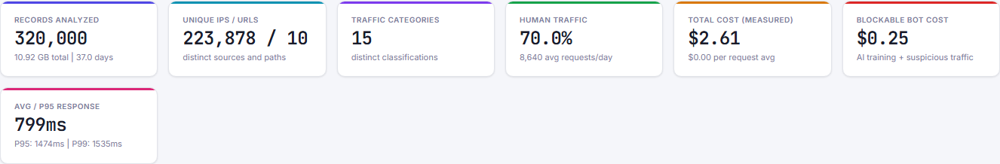
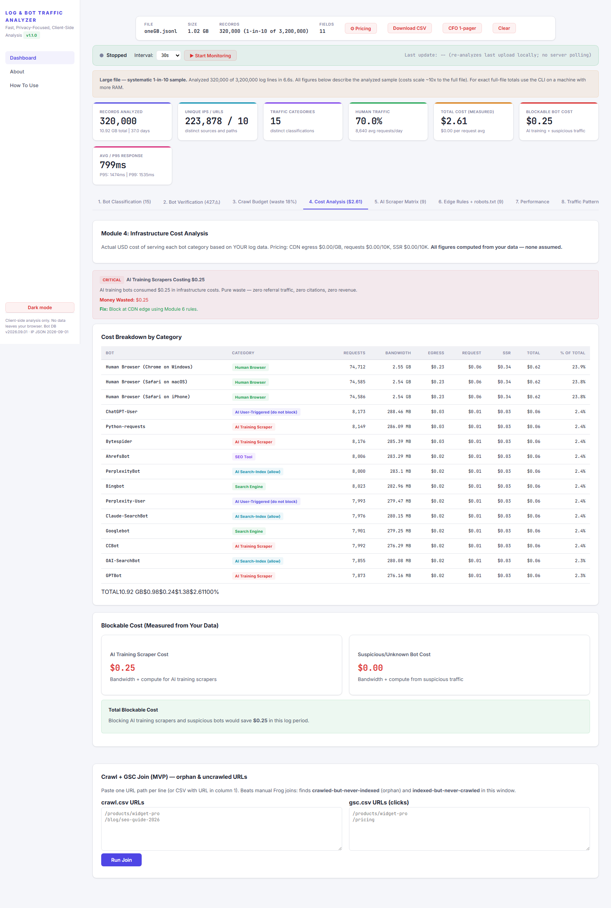

Analyzer / Research / 1GB teardown
I streamed 3.2M log lines in-browser: $2.61, $0.25 blockable
Not a toy demo. On 2026-09-11 the tool (v2.2.0, DB v2026.09.17, 127 signatures) ran end-to-end in headless Chromium against a real 1.02 GB NDJSON log (3,200,000 lines, seed 7). Every number below is measured — and the sampling is disclosed on-screen, not buried in footnotes.
The numbers
| Measurement | Result |
|---|---|
| File | oneGB.jsonl, 1.02 GB, 3,200,000 lines |
| Read + parsed + analyzed | 320,000 of 3,200,000 (systematic 1-in-10) in 6.6 s read, 13.0 s wall |
| Records / bandwidth (sample) | 320,000 records, 10.92 GB, 223,878 unique IPs |
| Traffic split | 70.0% human, 15 categories detected |
| Cost (CloudFront defaults) | $2.61 total, $0.25 blockable (training + suspicious only) |
| Response profile | avg 799 ms, P95 1,474 ms, P99 1,535 ms |
| Threats / warnings | 19,272 suspicious, 427 verification warnings surfaced (not hidden) |
| Trap waste | 18% trap bandwidth (16 parameterized/trap patterns) |


What fired
9 Cloudflare rules fired on the sample. 127 signatures classified; 4-layer verification surfaced 427 unusual checks instead of hiding them. The on-screen banner states sampling honestly — figures describe the analyzed sample and scale ~10× to the full file. For exact full-file totals (no sampling), node tools/cli.js --exact covers 500MB–50GB.
Why $0.25 — the blockable math
- Blockable = training + suspicious only. Search-index (OAI-SearchBot, PerplexityBot) and user-triggered (ChatGPT-User et al.) are never counted — asserted in tests, so the CFO number can't be inflated by citation traffic.
- Measured bytes × your CDN preset: CloudFront defaults here; switch to Cloudflare/Fastly/GCS presets in the pricing panel and every figure recomputes. Origin-compute stays OFF (logs can't tell SSR from static) unless you opt in with your own $/1K.
- Cross-check: the 10k pinned fixture independently measures $0.04 total / ~$0.00 blockable ($0.0046 training-only) with byte-identical counts in CI.
Reproduce it
npm run gen-logs -- --seed 42 --days 30reproduces the 10k fixture byte-identically (seesample-data/EXPECTED.md).- Drop any large log in the analyzer — watch Reading % (8MB slices), then the 14-step analysis progress (Web Worker past 20k rows).
- Compare your blockable share against $0.25/10×-scaled baselines in Tab 4, and your trap waste against 18% in Tab 3.
Run your own log
References
- Pinned 10k counts:
sample-data/EXPECTED.md· Method + privacy audit: METHOD.md · All 29 screenshots:assets/screenshots/. - Companion: 1GB Logpush guide · Tool comparison · Full bot DB.
Run your own log — no upload, files never leave your machine · GitHub + EXPECTED.md